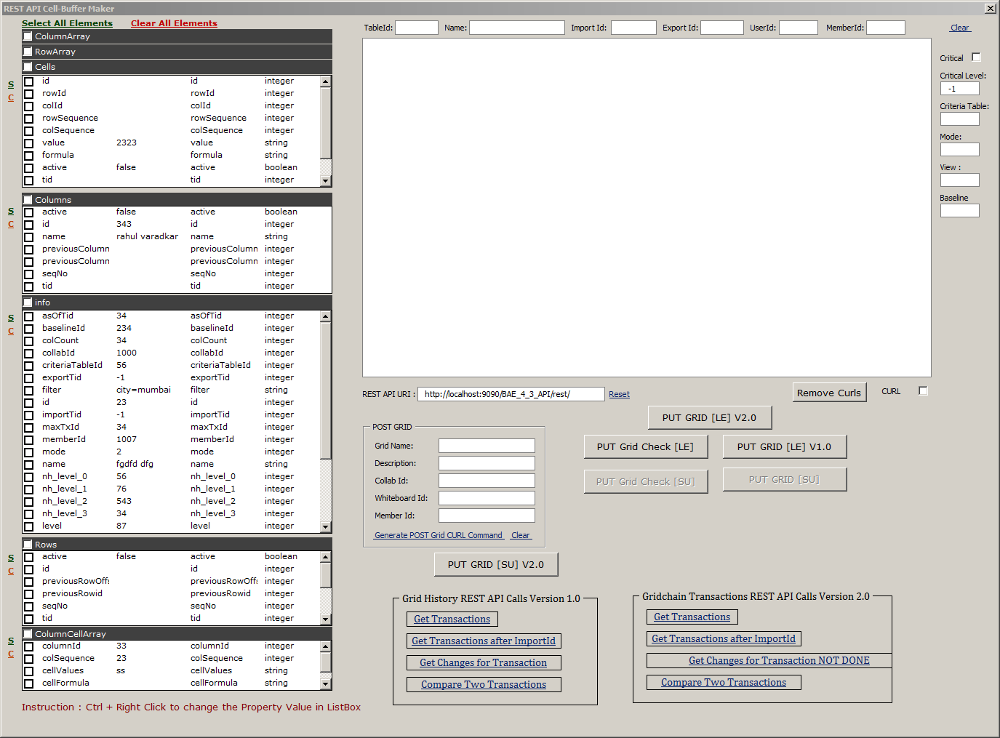
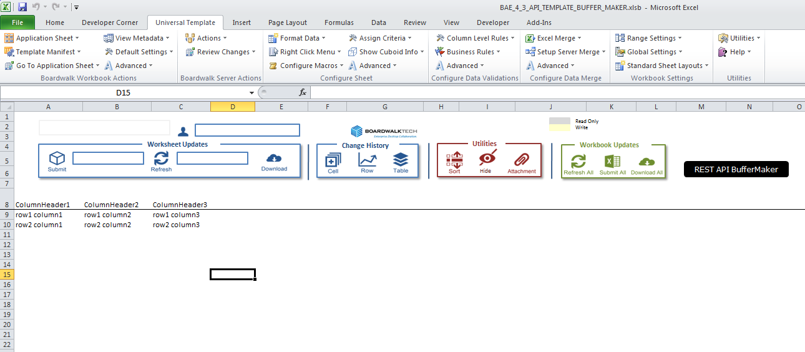

Boardwalk REST API BufferMaker Version 2.0
-
-
-
1. General Information
Boardwalk's REST API defines a set of functions which developers can perform requests and receive responses via HTTP protocol such as GET and POST.
Earlier Boardwalk's Grid-based database was only accessible using Microsoft Excel and Boardwalk's Neighborhoood and User Management was possible through Web-based Portal. In that case Microsoft Excel and Browser was an essential Client softwares to invoke and use Boardwalk Services.
REST APIs can be called using REST Client running over any Operating System on any device. Developers can call REST APIs using the most suitable language to their requirements.
Boardwalk's Grid Management APIs are used to run the Grid Based Operations like Creation of Grid, Reading of Grid, Updating Data in the Grid, Updating the Grid Structure, Deleting the Grid.
-
1.1 Overview
A Grid represents a Table of Rows and Columns. Every Row is identified by a RowID and Every Column is identified by a Column ID. The Column Header represents the Logical Name of the Column. Each Cell in the Table is identfied as an intersection of a Row and a Column.
The Objects defined in Grid Management APIs allows the Client to represent a Grid as a JSON Object. The Client can create a Grid by generating the JSON Object and sending the JSON Oject to PUT /Grid REST API to create the Grid Structure and populating Grid Data into it.
Boarkwalk's REST API BufferMaker is an Excel Worksheet based Utility that is used to generate the JSON Data Buffer represeting the Grid Structure, Grid Data inside it, Chages made to Grid Data and Grid Structure.
The BufferMaker Utility only generates the JSON Buffer for Grid Creation and Grid Updation related data. It does not involve any Server Operations like Saving Changes on Server.
This Utility is available in Boardwalk Template that provides interface for Grid Crations and Grid Updations on Server.
REST API BufferMaker Utility is a Form base interface that is used to Generate REST API buffer. Following Image show the Form interface of REST API BufferMaker Utility.

-
1.2 Boardwalk Terminology for Grid Based Operations
Grid Management involves following Operations,
1. Creation of Grid on Server-side.
Creation of Grid is a two step process.
In First Step the Grid is created with Empty Structure. This steps requires the Grid Name and location i.e. the Whiteboard where this Grid will be located in Boardwalk Collaboration Platform on Server.
In Second Step, the Grid Structure is created and Grid data is populated into it on Server.
In Boardwalk Terminology these Two steps are call LINK EXPORT. The LINK EXPORT Operation is the Creation of Grid. In this step the link is created between Server-side Grid Data and Client-side Grid in worksheet. Afer LINK EXPORT the Grid is available for User for Read and Write Grid data and Grid Structure.
User can create the Grid Structure and Data in Excel Worksheet and further generate JSON Buffer representing this Grid by using BufferMaker Utility.
2. Updating the Changes in Data and Structure into Server-side Grid.
After Link Export Operation; a Link between Server-side Grid data and Client-side Grid in Excel Worksheet is established.
User can further make changes in Excel Grid and can Save all changes to the Server Grid. In Boardwalk Terminology this operation is called Submit.
User can make changes in Excel Grid and further user the BufferMaker Utility to generate the JSON Represenation Grid Changes.
3. Reading the Changes in Data and Structure from Server-side Grid.
Any changes made in Server-side Grid can be downloaded from Boardwalk Template. In this operation all Grid Structure and Data changes are downloaded to Excel Grid. In Boardwalk Terminology this Operation is called Refresh.
4. Reading the Latest Grid Structure and Data.
Boardwalk Template allows user to download the LATEST version of Server-side Grid into Excel Worksheet. This downloads the LATEST Grid Structure as well as Grid Data from Server-side Grid. It also establishes the Link between Excel Grid and the Server-side Grid. In Boardwalk Terminology this operation is called as Link Import.
User can further make changes to Grid data and Grid Structure in Excel Grid; and further Submit these local changes to Server-side Grid.
Following image shows the Boardwalk Template sheet that allows all Grid Operations using Excel Interface. The REST API BufferMaker Utility is run by clicking "REST API BufferMaker" button displayed in BLACK.

-
2. Use of REST API BufferMaker
Boardwalk REST API BufferMaker is used for following purpose:
1. To Generate and display Link Export JSON Buffer.
2. To Generate and display Submit Buffer.
3. To Generate and display Link Export JSON Buffer for CURL Command.
4. To Generate and display Submit JSON Buffer for CURL Command.
5. To Generate and display Grid History Commands.